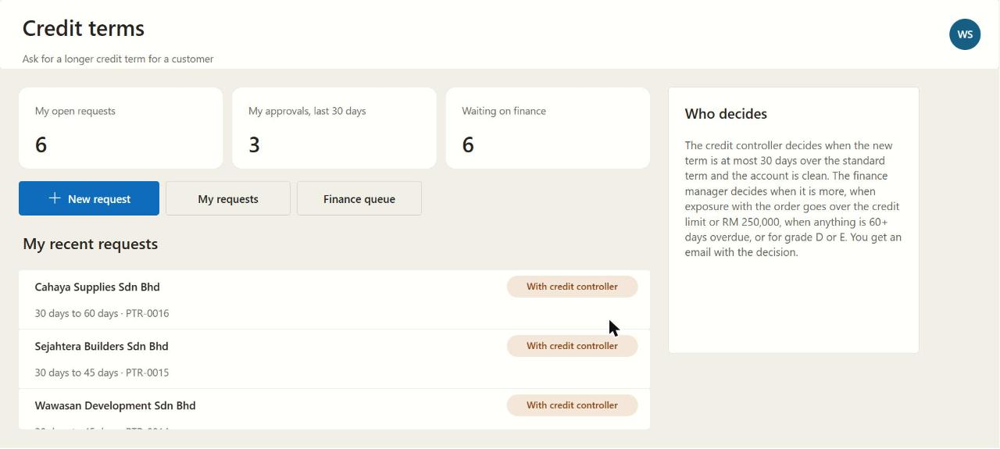
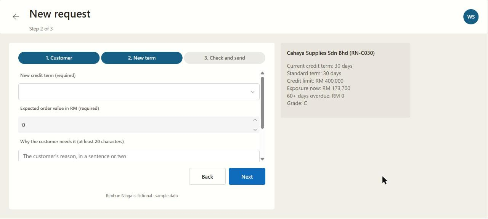
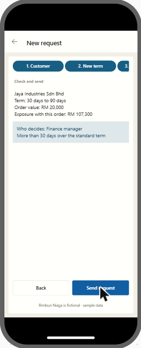
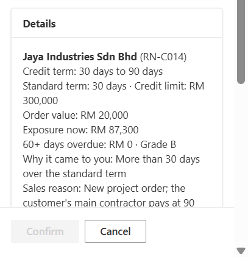
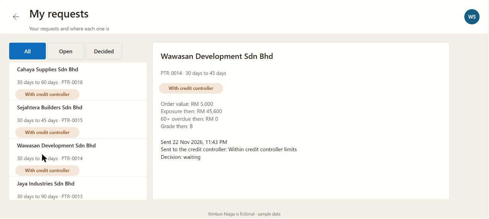
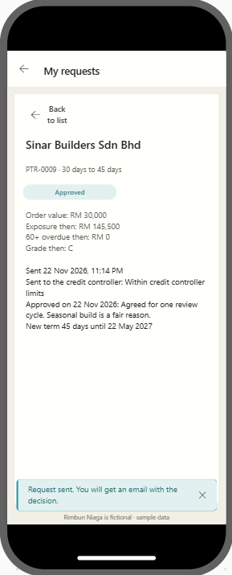
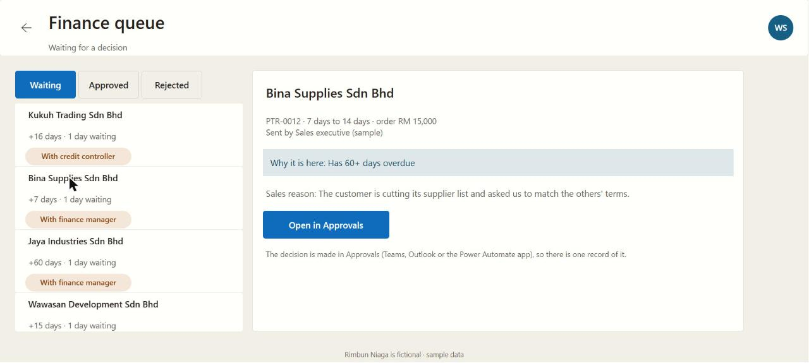
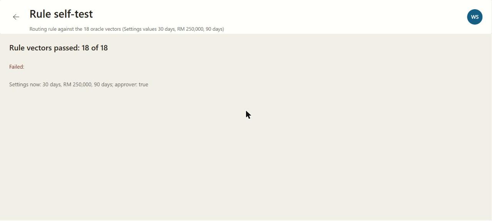
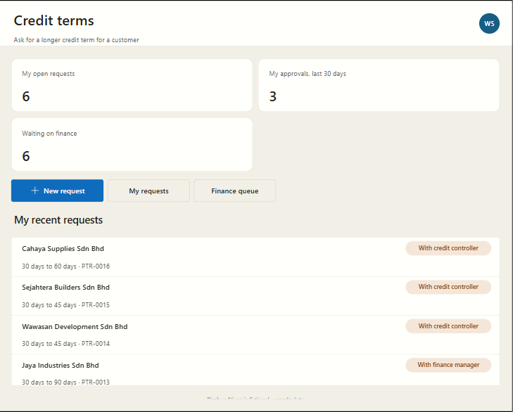
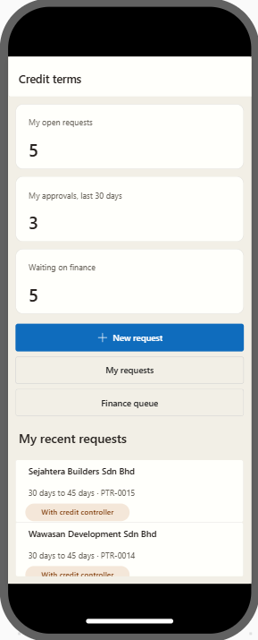

Credit term requests
Rebuild a small app where sales asks for a longer credit term, the right person decides in Approvals, and the requester follows it on a phone.
The company is fictional and all data is synthetic. Rimbun Niaga, 40 customers. There is no live link: you install it in your own tenant in about 45 minutes.
Source on GitHub · Download ZIP · Install notes
Get the code and see what is in it
Everything is in one repository: the generators, the generated app and flow, the solution file and the kit the generators use.
Download the repository (ZIP), or clone it:
git clone https://github.com/BIVenture2025/rimbun-niaga-credit-terms-app.git cd rimbun-niaga-credit-terms-app python3 --version # 3.10 or later; no other packages needed
| Folder | What is in it |
|---|---|
data/ | The seeded sample generator, the list builder and the frozen control totals |
rules/ | The routing rule as a Python oracle with 18 test vectors |
app/ | The app generator and the generated Power Apps YAML |
flows/ | The flow generator and the generated flow definition |
kit/ | Helpers the generators import: YAML writer, theme, components, Power Fx library, flow kit, list CSV tool, solution validator |
solution/ | The exported solution you import |
docs/ | This guide, install notes, brief, design package, build record and the second reviewer's check |
Understand the rule first
A salesperson asks for a longer credit term for one customer. Most requests are small and safe, and the credit controller can decide them. Some carry risk and must go to the finance manager. The app decides which, from five tests, and lists every test that fired:
- the new term is more than 30 days over the customer's standard term (not the current one, so splitting a request into small steps does not help);
- exposure with this order goes over the customer's credit limit;
- exposure with this order goes over RM 250,000;
- anything is 60 or more days overdue;
- the customer is grade D or E.
Terms come from a ladder: COD, 7, 14, 30, 45, 60 and 90 days. The thresholds and the two approvers' addresses live in the RN Settings list.
python3 rules/p36_rules.py --selftest # 18 checked, 0 failures
Generate the data and the lists
Open data/gen_sample.py and set OWNER to your own sign-in address: in testing you play the requester and both approvers.
Then generate the data and one CSV per list.
python3 data/gen_sample.py data/out python3 data/gen_lists.py kit data/out data/sp
Compare the control_totals.json the generator writes into your output folder with the committed data/control_totals.json: 40 customers, total exposure RM 4,703,500,
limits RM 8,150,000, 13 customers with overdue, 6 settings. Create a SharePoint site, upload the three CSVs to its Documents library, and create each list with
New, List, From CSV. The first line of each CSV declares the column types, so the lists arrive typed and filled.
The upload box is in a frame
Do not ship the CSVs
Import the solution
The solution holds the app, the flow, three connection references and four environment variables (the site and the three lists).
- Power Apps, Solutions, Import solution, pick
solution/RNCreditTerms_1_0_0_0.zip. - Create or pick a SharePoint, an Approvals and an Office 365 Outlook connection.
- Pick your site and the three lists for the four variables. The file carries no values on purpose.
- Import, then turn on the flow
RN Term request approval.
Set CreditControllerEmail and FinanceManagerEmail in RN Settings. The Finance queue appears only for these two people.
How the solution was checked
Exported through the Dataverse ExportSolution action straight to a file, then python3 kit/validate_solution_zip.py solution/RNCreditTerms_1_0_0_0.zip --cross-tenant: 11 files, 1 flow, 1 canvas app, 4 variable definitions, 3 connection references, 0 errors, 0 warnings.
Environment variable values ride along
Use it: send a request
Home shows your open requests, your recent approvals and, for approvers, what is waiting. A new request is three short steps: pick the customer, pick the new term with the order value and a reason, then check and send. Step 3 says who will decide and why, before you send.



Use it: decide and follow
Within about a minute the flow gives the request a number, writes the tier and the reason, and sends an approval. The approver decides in the Approvals centre, Teams or Outlook; the details show the term, the standard term and credit limit, the exposure, the overdue amount and grade, and why it came to them. The flow writes the decision back, updates the customer's current term with a review date six months on, and emails the requester.




Check it
Four checks tell you it works.
- Add
?screen=ruletestto the app's play link: 18 of 18. - Send a request for a customer with clean history and a small step: it goes to the credit controller, "Within credit controller limits".
- Send one 60 days over the standard term: it goes to the finance manager, and the reason names the test.
- Type a row straight into the list with a 120-day term: the flow marks it Needs attention with "Pick a term from the list" and stops.



The traps table
What the author hit and a reader would otherwise find out the hard way.
| Trap | What happens | Fix |
|---|---|---|
| Text control too short for its padding | A 24 px status pill shows tiny scroll arrows in the published app, though not in Studio | Modern text pads 5 px and has a 32 px minimum inside a container: set height 28, padding 0, minimum 28 |
| Named formula over a list | A request just sent does not appear in My requests until the app reloads | Put the filter inline where it is used; Refresh did not re-evaluate the named formula |
| Timer inside a component | The toast never goes away | A timer on the screen dismisses it; the component keeps its close button |
| Studio publishes the old version | After YAML is pushed with the authoring tools, Save is greyed and Publish republishes the last saved version | Make one small change in Studio (and change it back) so Save lights up, save, then publish |
| Component inside a gallery | Studio refuses it | Use a plain text control styled as a pill inside gallery rows |
| Dropdown default | A text default is rejected | The modern dropdown wants a record: {Value: "Other"} |
| Date-only values | A review date stored at UTC midnight shows the day before in Malaysia | The flow computes dates in Malaysia time (Singapore Standard Time) before writing |
| Partial updates in the flow | The standard "update item" action insists on every required column | Send a REST MERGE with only the changed columns |
Known limits
Smaller points: desktop captures are 1280 wide; Next on step 2 checks the fields when pressed rather than being greyed out.
What this does not do
No credit scoring, no ERP link (exposure and overdue are list columns), no delegation of approval, no reminders beyond what Approvals sends. The data is synthetic.